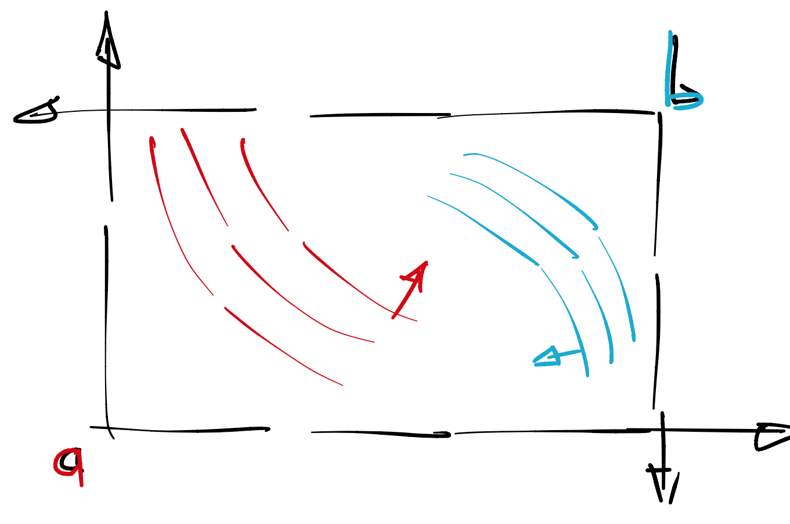

Первая лекция, часть 1
Contents
Первая лекция, часть 1¶
В этой лекции мы поговорим об экономиках обмена.
Что такое экономика обмена?¶
Экономика обмена это
несколько потребителей (индивидуумов) \(I = \{ a,b,c, \ldots\}\)
производителей пока что нет, но им зарезервирована буква \(J\)
несколько товаров \(K = \{1, 2, 3, \ldots\}\)
начальные запасы \(\vec w_{a}, \vec w_{b}, \vec w_{c}, \ldots\)
вектора потребления \(\vec x_{a}, \vec x_{b}, \vec x_{c}, \ldots\)
Экономика может находиться в одном из многих допустимых состояний
Definition 59
Допустимым состоянием экономики обмена называется набор координат потреблений \(\{x_{ik}\}_{i \in I, k \in K}\) такой что
потребления неотрицательные
сумма потреблений (по каждому товару) совпадает с общими запасами
Общие запасы \(\vec w\) это сумма индивидуальных запасов:
Другими словами, надо сложить все запасы (отдельно по товарам) и разделить их между агентами. В контексте экономики обмена нас будут интересовать только допустимые равновесия.
Ящик Эджворта¶
Рассмотрим случай, когда \(\dim I = 2, \dim K = 2\). В таком случае, допустимые состояния это четыре координаты:
причем они связаны соотношениями
то есть, степеней свободы у допустимого состояния всего две: \(x_{1a}, x_{1b}\).
Пространство допустимых состояний описывается прямоугольником в \(\mathbb{R}^2\), высота и ширина которого равны \(w_1\) и \(w_2\) соответственно. Этот прямоугольник называется “ящиком Эджворта”, в честь еще одного экономиста.
У Кати есть 2 килограмма сахара и 3 килограмма соли, а у Миши есть 3 килограмма сахара и 1 килограмма соли. Опишите своими словами общие запасы.
Всего в экономике 5 килограмм сахара и 4 килограмма соли.
На той же картинке, мы можем изобразить предпочтения каждого агента. Для этого надо выбрать того агента, чьи координаты будут расположены нормально, а координаты второго агента будут перевернуты. По умолчанию, мы переворачиваем втоорого агента (\(b\)).
{kind=link}
Любая точка внутри (или на границе) ящика Эджворта задает допустимое состояние и наоборот.
Парето Оптимальность¶
Далее, мы хотим выбрать те допустимые состояния экономики, которые, в каком то смысле, являются оптимальными. Оптимальность будет пониматься в одном из двух смыслов:
Definition 60
Допустимое состояние сильно ПО если не существует другого допустимого состояния, которое делает всем агентам (слабо) лучше, но хотя бы одному агенту сильно.
Допустимое состояние слабо ПО если не существует другого допустимого состояния, которое делает всем агентам (сильно) лучше.
Разница между двумя понятиями практически отсутствует, и, на самом деле, можно формально доказать, что ее нет для строго вогнутых предпочтений. Контрпримером к этому факту будут Леонтьевские предпочтения, мы их разберем чуть позже.
Какое из двух понятий ПО является более сильным, то есть, из того что оно выполняется вытекает, что выполняется второе?
Из сильного вытекает слабое.
Геометрическая интерпретация ПО¶
Рассмотрим точку \(x\) в ящике Эджворта и проведем через нее линии уровня полезностей каждого агента. Для того, чтобы опровергнуть слабую ПО, достаточно привести пример (точку \(x'\)) такую что она находится в \(L_{++}(x)\) для первого агента и \(L_{++}(x)\) для второго агента. Напомним, что
верхнее лебегово множество \(L_{+}(x)\) это все точки \(x'\) такие что \(x' \succcurlyeq x\)
верхнее лебегово множество \(L_{++}(x)\) это все точки \(x'\) такие что \(x' \succ x\)
Рассмотрим несколько примеров
тут будет картинка
точка \(\hat x\) находится в углу ящика эджворта и потому все альтернативные точки \(x'\) делают второму агенту гарантированно хужеэ
точка \(\tilde x\) находится на пересечении кривых безразличия, поэтому это ни слабое ни сильное ПО
точка \(x^{\ast}\) находится в точке касания кривых безразличия и потому это слабое (а также сильное) ПО
Другими словами, если ничего странного не происходит то ПО это просто точки касания кривых безразличия. Однако, что-то странное довольно легко устроить.
Что то странное¶
Пусть в ящике Эджвотра первая полезность - Кобб Дуглас, а вторая - квазилинейная
тут будет картинка
Легко видеть, что точки касания уходят за границы ящика. А точки снаружи ящика не могут быть парето оптимальными, поскольку мы в самом начале потребовали, чтобы все рассматриваемые точки были допустимыми. То, что находится за гранью ящика Эджворта трогать строго настрого запрещено.
Но что же тогда будет ПО? Ответ: точки “ближайшие” к точкам касания; но придется все равно проверить руками.
тут будет картинка
Утилитарная интерпретация ПО¶
Рассмотрим взвешенную полезность агентов в допустимой точке \(х\):
сильная ПО означает, что для любой комбинации весов \((\alpha, \beta) \neq (0,0)\) точка \(x\) (строго) оптимальна в смысле взвешенной полезности агентов. То есть, если нам предлагают претендента \(x'\) такого что всем агентам строго лучше, то одна из таких взвешенных полезностей среагирует.
слабая ПО означает то же самое, но веса должны быть строго положительные.
На практике, один из двух весов можно опустить
И тогда мы получим однопараметрическое семейство точек, называемое Парето границей или Парето фронтом.
Как не запутаться,¶
В чем сила?
Сила сильного ПО в том, что он выдерживает больше тестов чем слабый ПО. Слабый ПО проверяется на строго положительных весах, а сильный проверятся также на весах которые могут (частично, но не целиком) равняться нулю.
Слабая но не сильная ПО¶
Наконец, хотелось бы увидеть